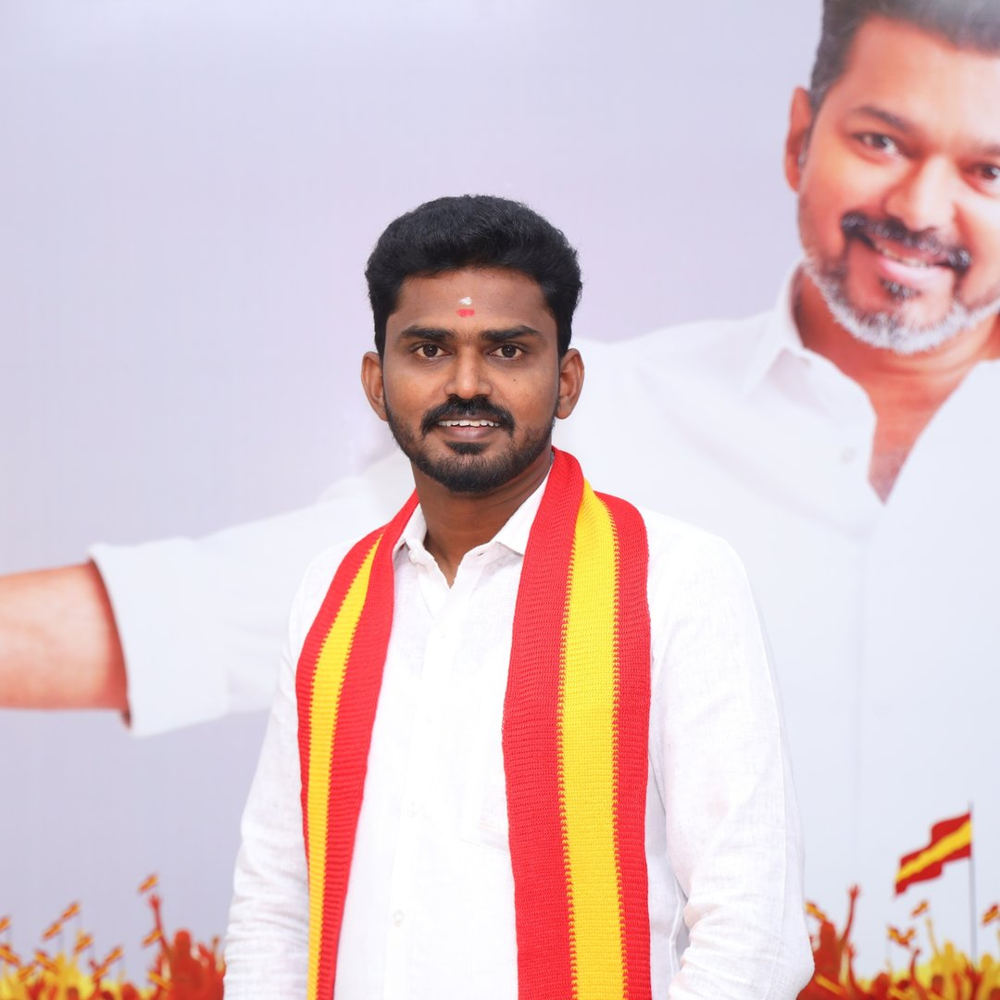

தமிழக வெற்றிக் கழகம் | People's Advocate & Political Leader under Thalapathy Vijay's leadership

Adv. R. Dilip Kumar | B.L., M.L.
B.L., M.L. (Law) | Social Activist | Political Strategist
Under the visionary leadership of our beloved Thalapathy Vijay, Advocate R. Dilip Kumar serves as the District Secretary of Tamilaga Vettri Kazhagam (TVK) for the Chepauk Assembly constituency. With a strong legal background and deep commitment to social justice, he bridges the gap between people's grievances and effective political action.
As a people's advocate, he has championed numerous public causes, fought for the rights of the marginalized, and now leads TVK's grassroots initiatives in the historic Chepauk region, ensuring that the voice of every citizen reaches the highest echelons of leadership.
Practicing at Madras High Court, handling civil & criminal litigation, specializing in public interest law.
Led multiple protests & awareness campaigns for water rights, housing, and free legal aid in Chepauk.
District Secretary – Chepauk Assembly Constituency (2024 - Present)
Monthly legal awareness camps & pro bono services for underprivileged in Chepauk.
Door-to-door grievance redressal and citizen charter implementation.
Focus on infrastructure, clean water, and heritage preservation.
Empowering students with knowledge of their constitutional rights.
.jpeg)
.jpeg)
.jpeg)
.jpeg)
{kind=link}
{kind=link}